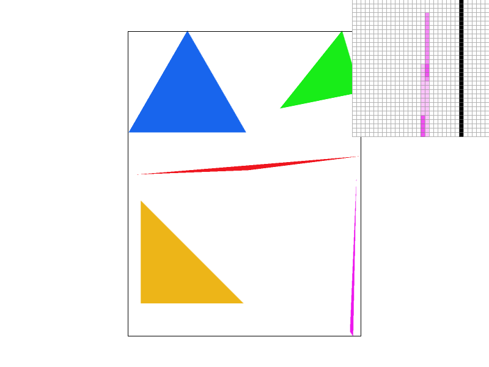
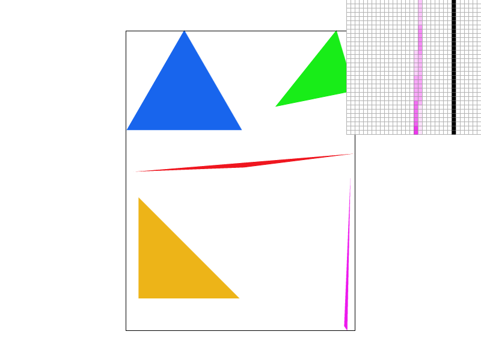
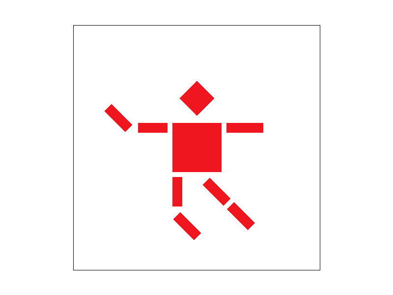
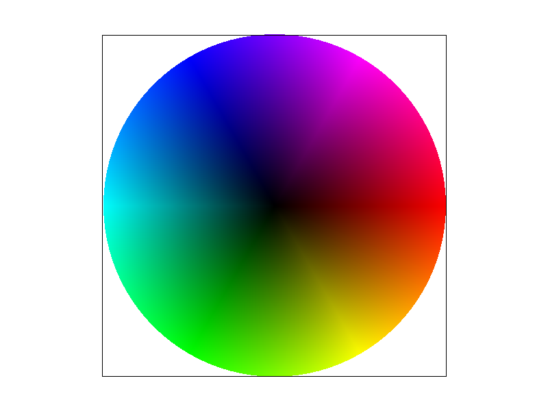
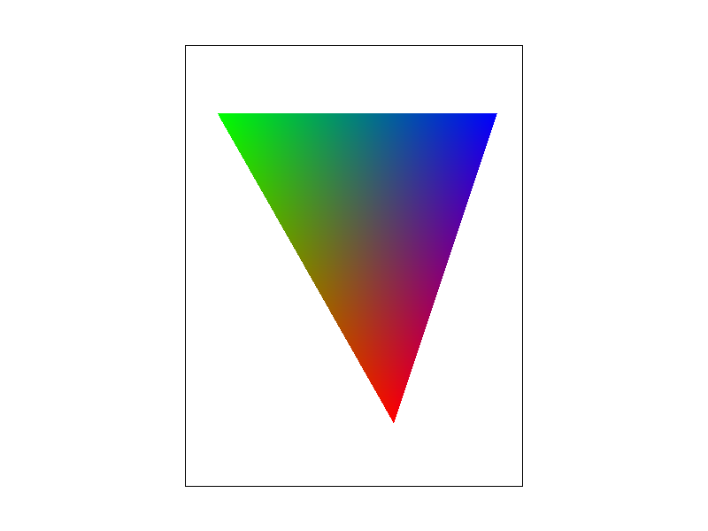
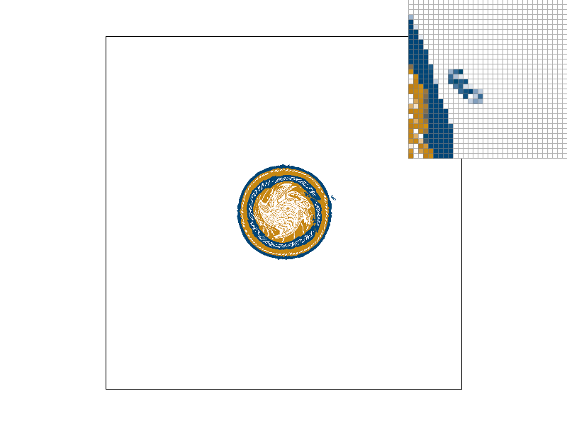
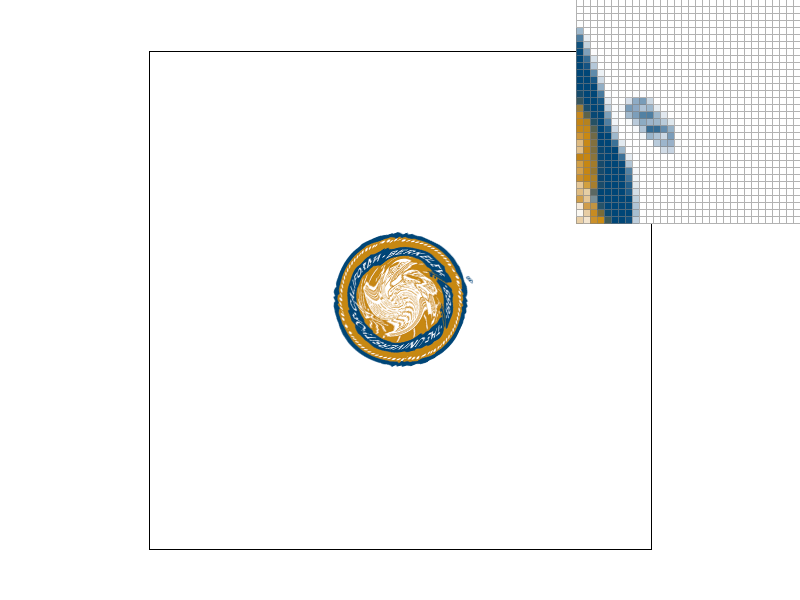
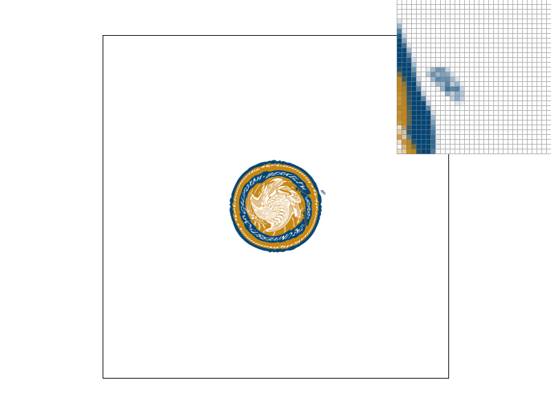
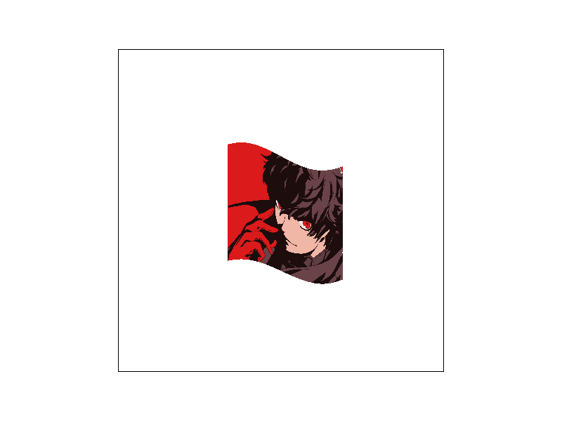
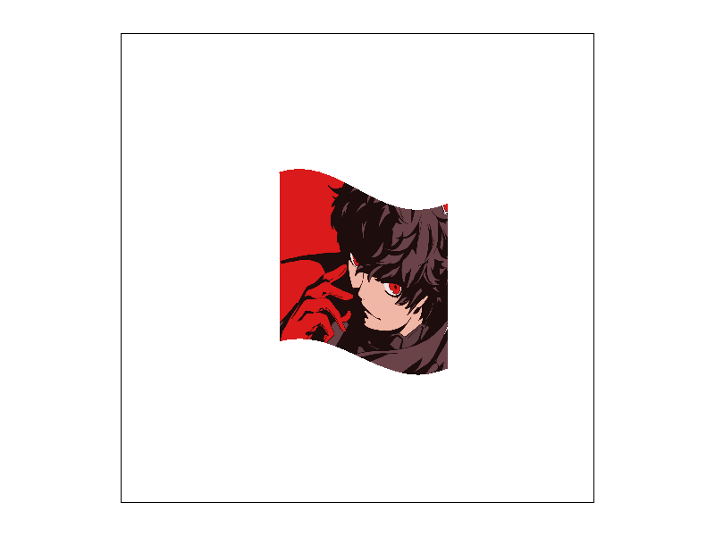

Overview
In this project, I built a rasterizer that can take in triangles from svg files and render them onto the screen. I also implemented texture sampling that maps pixels from buffer space to texture space and takes the color of the pixel to use it in rendering. Overall this project is interesting because there are many different small details that need to be taken into consideration when implementing different tasks of this project.
Section I: Rasterization
Part 1: Rasterizing single-color triangles
In order to rasterize a triangle, first the function needs to take in 3 points that specify the location of the triangle, then, perform a test to check whether a point is within the triangle. By utilizing the 3-line test on lecture, the point can be tested to see whether or not it is inside the triangle by checking if all the points are on the same side. However, looping through every point in the framebuffer is too costly, therefore I only tested a bounded rectangle around the triangle that is taking the points of the minimum and maximum X and Y values of the 3 points of the triangle. After knowing whether or not the point is within the triangle, then get the input color and put it into the frame buffer to draw the triangle.
|
|
Part 2: Antialiasing triangles
In order to do supersampling, I set another in memory buffer that is the size of the framebuffer multiplied by the number of supersampling pixels in order to store the supersampling data. Then, for every x pixels that I need to super sample, I store them adjacently in the super sample buffer, and in the last step of the rendering process, I average the color value of every supersampling pixel to get the final color value of the pixel. Supersampling is useful because it can use an average value when the edge of a triangle is only touching part of the pixel. Originally, only the center of the pixel was being tested against the triangle, which caused jaggies to appear on the edges of the triangle. Using supersampling can mitigate this problem since every pixel is no longer either on or off but on a spectrum of color so the image looks more connected.
|
disconnected purple triangle |

still looks disconnected but better |

looks much better |
Part 3: Transforms
I changed the hand and the leg of the robot to look like the robot is in the running position. I altered the svg file by changing the transform functions inside it and changing the rotation function’s parameter.
|

|
Section II: Sampling
Part 4: Barycentric coordinates
Barycentric coordinate is taking a point within a triangle and calculating how close the point is to each of the three vertices. Using barycentric coordinates, it is useful to calculate the color of a point within a triangle if each vertex corresponds to a color. This is useful when trying to draw a gradient of color within any shape because it can form these colors easily.
|

|

blends according to the distance to each vertices |
Part 5: "Pixel sampling" for texture mapping
Pixel sampling is the technique used to map a pixel in a buffer to a color in the texture space. Nearest sampling only takes in the texture pixel that is the closest to the pixel in the buffer space, and bilinear sampling takes the 4 pixels around the center pixel and then interpolates those 4 pixels in the texture space in order to get a more accurate color of the texture. For these two techniques, there will be a large difference if the texture has a big contrast in different areas of the picture.
In the berkeley logo, using pixel sampling and bilinear sampling gives a slightly different result. In pixel sampling while under 1 pixel supersampling, the R mark as shown in the picture is very sharp. In contrast, using bilinear sampling, the R mark appears to be more clear. Then, as supersampling increases, both pixel sampling and bilinear sampling just gets more clear, but bilinear sampling gives a better looking result.
|

|

|
|
|

|
Part 6: "Level sampling" with mipmaps for texture mapping
Level sampling is the technique of using a mipmap to map the pixel in the buffer space to texture space. Mipmap is useful because it uses a preset of the texture image alongside with different versions of the lower resolution image. When sampling from a point that is far away from the view point, it is beneficial to sample from a lower resolution level in the mipmap because that is faster and more efficient than supersampling. Increasing the quality of image by supersampling is the best way to improve the quality of an image, however, it comes with the drawback of being too costly. Pixel sampling is a good method to sample the texture, however, using a mipmap can be better since it can give more room for improvement compared to using only 1 level in pixel sampling.
|

|

|

|
|
Photo credit: Ren Amamiya from Persona 5
Section III: Art Competition
If you are not participating in the optional art competition, don't worry about this section!